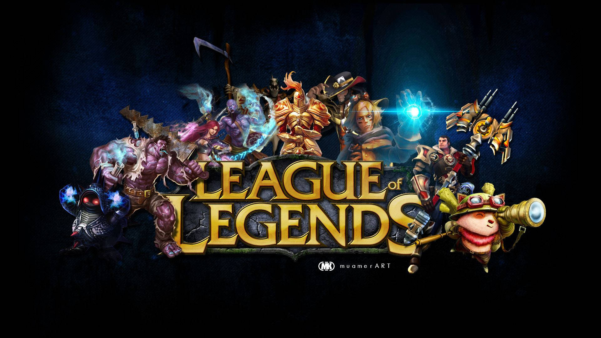
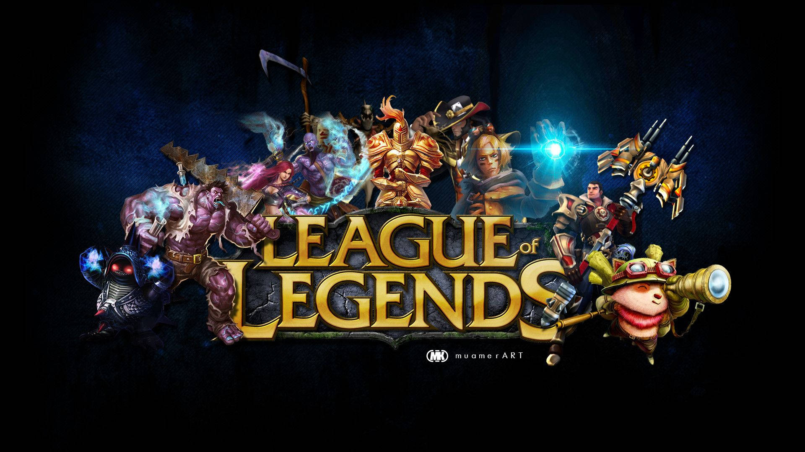

About Me
My journey has been a whirlwind of challenges and triumphs, each one shaping me into the person I am today. Back in grade 9, I took on the Rubik's Cube competition with passion and precision. I won 1st place in the school, district, and regional divisions, and then at the national level in Baguio, I proudly placed 3rd among thousands of competitors. A fun fact: I can even solve a Rubik's Cube underwater!
In grade 11, I took my first steps into the world of dance when I was invited to join MUVAPOW, a group from Bauang Technical High School. We were chosen to represent our school at the LPU competition, and though we had only 3 days to practice, we managed to take home the championship. That experience marked the beginning of my deep connection to dance. Then came the pandemic, during which I focused on working out and building strength. After the world reopened, I dived back into dancing, competing both locally in Batangas and internationally. Representing the Philippines in South Korea, I was honored to place 3rd in a fierce international competition.
Alongside all these milestones, I also took on the challenge of being a working student, learning valuable lessons in both life and time management. Each experience has taught me the importance of dedication, resilience, and always pushing myself to achieve more.
Experience
Hi, I'm Jaynor, a 21-year-old Information Technology student at Westmead International High School. When I’m not buried in code or working on my thesis, you’ll find me singing, dancing, or diving into online games on my PC or mobile. My passion for programming has only grown, and I’m excited to see where it takes me.
I'm also a dancer—currently balancing studies and performances. Recently, I had the honor of representing the Philippines in South Korea, where I helped my team earn 2nd place among 9 competing countries. It was a proud moment and a testament to the hard work and dedication I’ve put into both my studies and my craft.
Beyond dancing, I love singing and graphic design. Whether I’m crafting visuals or belting out a tune, creativity is my constant companion. My life motto is simple but powerful: “Have will, and You Will.” It’s a reminder to keep pushing forward, no matter what.
Thanks for stopping by and getting to know a bit about me!
Skills
- Graphic Design: Proficient in Adobe Photoshop and other design software, capable of creating visually appealing graphics, layouts, and branding materials.
- Web and Software Development: Skilled in coding and programming, with experience in creating functional and interactive websites and applications.
- Problem-Solving: Strong analytical skills developed through Rubik's Cube competitions and coding projects.
Creative Skills:
- Singing: Versatile singer with experience in performance and vocal techniques.
- Drawing and Illustration: Skilled in traditional and digital art, with a focus on creativity and attention to detail.
- Artistic Design: Proficient in creating unique and engaging designs for various mediums, including print and digital.
Leadership and Teamwork:
- Team Collaboration: Proven ability to work as part of a team, demonstrated by success in dance competitions and group projects.
- Event Participation: Experienced in participating and leading team efforts in high-pressure environments, such as dance competitions and group activities.
Personal Attributes:
- Dedication and Resilience: Proven ability to dedicate time and effort to personal and academic growth, demonstrated by balancing multiple pursuits like dancing, coding, and graphic design.
- Time Management: Ability to manage multiple tasks efficiently, balancing school, personal projects, and extracurricular activities.
Educational Attainment
Tertiary:
Westmead International School (2021 - Present)
Commet St. Alangilan, Batangas
Bachelor of Science in Information Technology
Bauan Technical Integrated High School (2019 - 2021, SHS)
Bauan, Batangas
Secondary:
Sta. Teresita National High School (2015 - 2019, JHS)
Sta. Teresita, Batangas
Primary:
Lodlod Elementary School (2009 - 2015)
Lodlod Purok 4 Lipa, Batangas
Gallery
Graphic Designs
Talents
Fashion
Gaming
 
